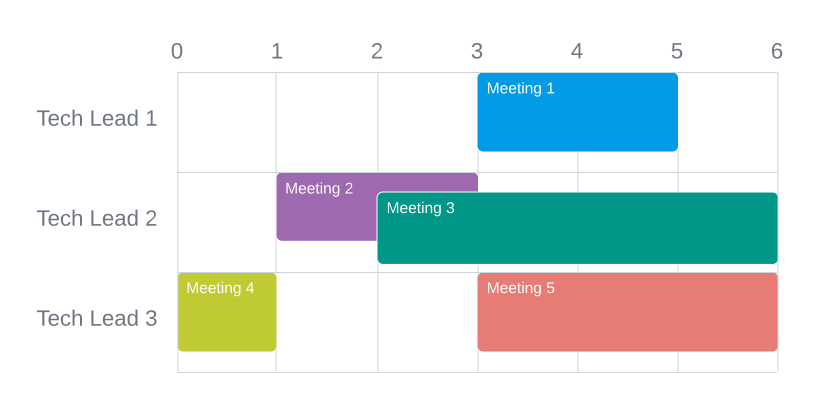

Scheduling meetings at Google is not an easy task. Even with the help of Google Calendar, Ada has a lot of difficulty with it!
Ada works as a Software Engineer at Google, and needs to get approval for her new project. In order to get an approval, she needs to meet with at least $$$\mathbf{K}$$$ of $$$\mathbf{N}$$$ Tech Leads.
Ada has access to the calendars of all $$$\mathbf{N}$$$ Tech Leads. For each Tech Lead, Ada can see all their scheduled meetings. The timeline in this problem can be viewed as $$$\mathbf{D}$$$ consecutive hours, and all meetings are in $$$[0, \mathbf{D}]$$$ hours range, with both ends being integer numbers. Scheduled meetings, even for the same person, can overlap (people are notorious for this at Google!).
Ada needs to schedule an $$$\mathbf{X}$$$-hour-long meeting in the interval of $$$[0, \mathbf{D}]$$$ hours, with both ends being integer numbers as well. At least $$$\mathbf{K}$$$ of $$$\mathbf{N}$$$ Tech Leads should be present for the whole meeting, that is their calendar should be completely free for the entire meeting duration.
Unfortunately, it might be the case that it is already impossible to find a slot to schedule such an $$$\mathbf{X}$$$-hour-long meeting. In that case, Ada will need to persuade some Tech Leads to cancel their existing meetings.
What is the minimum number of scheduled meetings that need to be canceled so that Ada can meet with at least $$$\mathbf{K}$$$ Tech Leads?
The first line of the input gives the number of test cases, $$$\mathbf{T}$$$. $$$\mathbf{T}$$$ test cases follow.
The first line of each test case contains four integers $$$\mathbf{N}$$$, $$$\mathbf{K}$$$, $$$\mathbf{X}$$$, $$$\mathbf{D}$$$. $$$\mathbf{N}$$$ represents the number of Tech Leads, $$$\mathbf{K}$$$ is the minimum number of Tech Leads Ada needs to meet, $$$\mathbf{X}$$$ is the length of the meeting that needs to be set up, and $$$\mathbf{D}$$$ is the upper bound of the $$$[0, \mathbf{D}]$$$ hour range representing the timeline of the problem — no meeting can end after $$$\mathbf{D}$$$.
The second line of each test case contains an integer $$$\mathbf{M}$$$, representing the number of scheduled meetings.
$$$\mathbf{M}$$$ lines follow. The $$$i$$$-th of these contains three integer numbers $$$\mathbf{P_i}$$$, $$$\mathbf{L_i}$$$, and $$$\mathbf{R_i}$$$. These numbers represent that a Tech Lead $$$\mathbf{P_i}$$$ has a scheduled meeting between the hours $$$\mathbf{L_i}$$$ and $$$\mathbf{R_i}$$$, not including the endpoints (that is, the meeting can be seen as an $$$(\mathbf{L_i}, \mathbf{R_i})$$$ interval).
Note that all $$$\mathbf{M}$$$ meetings in the test case are independent, even if some of them have the same starting and ending time.
For each test case, output one line containing
Case #$$$x$$$: $$$y$$$, where $$$x$$$ is the test case number
(starting from 1) and $$$y$$$ is the minimum number of scheduled meetings that needs to be
canceled so that Ada can schedule an $$$\mathbf{X}$$$-hour-long meeting with at least $$$\mathbf{K}$$$ Tech Leads.
The timeline of this problem can be seen as an $$$[0, \mathbf{D}]$$$ interval — that is, $$$\mathbf{D}$$$ consecutive hours, where $$$\mathbf{D}$$$ can be bigger than $$$24$$$.
A meeting in the interval $$$(L, R)$$$ means the meeting starts at the beginning of the $$$L$$$-th hour, and ends at the beginning of the $$$R$$$-th hour, covering the whole time period in between, without any gaps (i.e. the interval is continuous). Endpoints are not included in an $$$(L, R)$$$ interval. For Tech Leads attending Ada's scheduled meeting, Ada's new meeting can border some of their other non-canceled meetings — that is, it can start right when another meeting ends, or end right when another meeting starts, or both. A Tech Lead cannot attend Ada's meeting if they have any other non-canceled meetings overlapping with Ada's meeting at any point.
See explanation of the sample test cases for more clarity.
Time limit: 40 seconds.
Memory limit: 1 GB.
$$$1 \le \mathbf{T} \le 100$$$.
$$$1 \le \mathbf{P_i} \le \mathbf{N}$$$, for all $$$i$$$.
$$$0 \le \mathbf{L_i} < \mathbf{R_i} \le \mathbf{D}$$$, for all $$$i$$$.
$$$1 \le \mathbf{X} \le \mathbf{D} \le 8$$$.
$$$1 \le \mathbf{K} \le \mathbf{N} \le 10$$$.
$$$0 \le \mathbf{M} \le 20$$$.
$$$1 \le \mathbf{X} \le \mathbf{D} \le 10^5$$$.
$$$1 \le \mathbf{K} \le \mathbf{N} \le 10^5$$$.
$$$0 \le \mathbf{M} \le 10^5$$$.
3 3 2 2 6 5 1 3 5 2 1 3 2 2 6 3 0 1 3 3 6 3 3 2 6 5 1 3 5 2 1 3 2 2 6 3 0 1 3 3 6 3 2 3 6 5 1 3 5 2 1 3 2 2 6 3 0 1 3 3 6
Case #1: 0 Case #2: 2 Case #3: 1
The meetings scheduled in all three sample test cases look as following:
In Sample Case #1, Ada needs to schedule a two-hour-long meeting with at least two Tech Leads. She can schedule such a meeting between hours $$$1$$$ and $$$3$$$ with Tech Leads $$$\#1$$$ and $$$\#3$$$. In this case, no existing meetings need to be canceled.
In Sample Case #2, Ada needs to schedule a two-hour-long meeting with all three Tech Leads. She can schedule such a meeting in the interval $$$[0, 2]$$$, which will require meetings $$$2$$$ and $$$4$$$ to be canceled. Another option is to schedule a meeting in the interval $$$[1, 3]$$$. Both options require two meetings to be canceled, which is the minimum number possible.
In Sample Case #3, Ada needs to schedule a three-hour-long meeting with at least two Tech Leads. She can schedule this meeting in the interval $$$[0, 3]$$$, and meet with Tech Leads $$$\#1$$$ and $$$\#3$$$. This will require meeting $$$4$$$ to be canceled, and this is the optimal solution here.